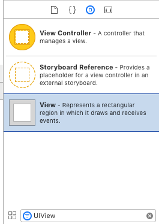
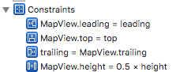
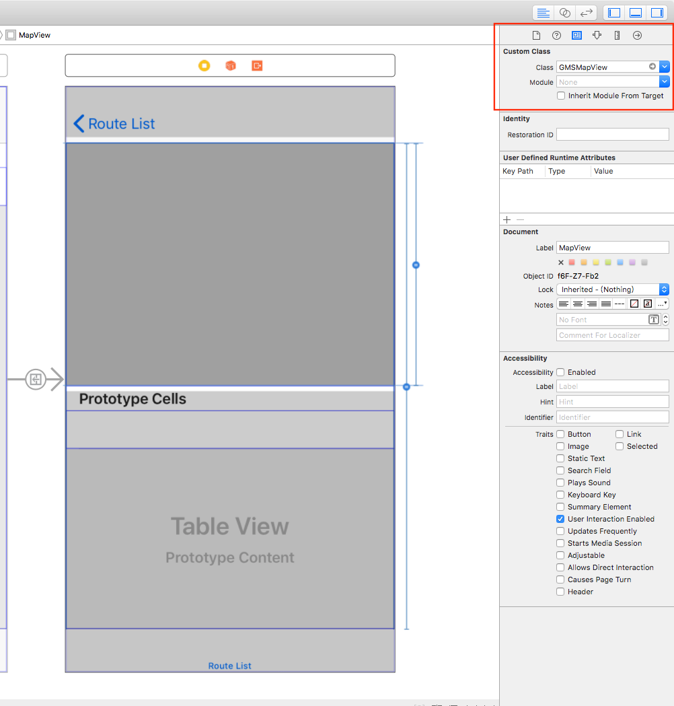
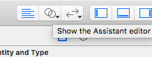
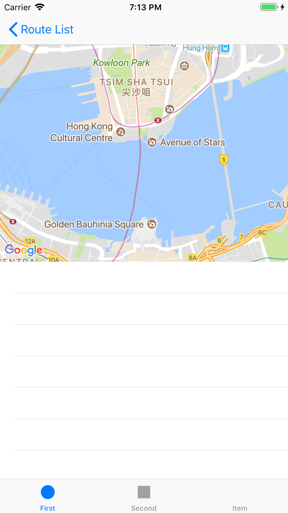

相信很多App都需要用到地圖功能，除了Apple原生的MapKit之外，功能齊全的Google Map SDK也是不錯的選擇。
本篇blog介紹如何開始使用Google Map SDK，和一些常用但官方沒有教的功能。
安裝 (Installation)
主要步驟：
- 安裝SDK
- 取得API
- 在初始化App的時候(AppDelegate.swift)設定好API Key
跟隨官方文檔照做就可以了。
建議使用Cocoapods安裝SDK，一個非常熱門又方便ios dependencies管理工具。
開始使用 (Quickstart)
顯示地圖
官方的新手教學只教你如何將MapView填滿整個ViewController，
但很多時候MapView只是一個ViewController的subview，
這時候就不能跟官方教學做。
1. 在Storyboard裡建立一個MapView
先把UIView拖到ViewController之上

設置好layout contraints

關於怎樣控制XCode裡的Auto Layout，可以看看Raywenderlich的一篇教學。
重點：把UIView的Class改成GMSMapView

2. 在ViewController裡建立IBOutlet
用途：在ViewController裡建立IBOutlet var，讓它可以在code裡面控制storyboard裡的view。這是一個常做的動作。
開啟Storyboard，開啟"Assistant Editor"

把你的MapView "control+drag" 到ViewController裡，將它命名為mapView。
應該會產生以下的variable：
import GoogleMaps
class SomeViewController: UIViewController {
@IBOutlet weak var mapView: GMSMapView!
// ...
}
現在我們可以從ViewController裡控制這個mapView了。
3. 設置MapView的初始位置
在ViewDidLoad()裡初始化mapView的camera：
let camera = GMSCameraPosition.camera(withLatitude: 123.123123, longitude: 123.123123, zoom: 15)
mapView.camera = camera
到這裡就完成初始化了，可以Run app看一看成果。

顯示Markers
let position = CLLocationCoordinate2D(latitude: lat, longitude: long) // lat & long must be Double
let marker = GMSMarker(position: position)
marker.title = "Hello World" // 用家按下marker時會顯示出來
marker.map = routeDetailMapView
(我本來以為會是類似mapView.add(marker)，但原來是反過來，把mapView assign到marker.map當中。)
其他常用功能 (Other frequently used features)
以下是一些很常用到的功能，但官方竟然沒有教！
以Markers的位置決定初始範圍 (Rescale MapView to fit markers)
剛才我們使用GMSCameraPosition.camera(withLatitude:, longitude:, zoom:)來初始化地圖的視角，
但實際情況下，我地通常會有一堆點要顯示，但中心點的lat, long, zoom level全部都很難計算出來。
這時可以使用GMSCoordinateBounds，它提供了includingCoordinate()，會自動計算新的bounds去迎合新的location。
最後把MapView animate 到這個bound。（GMSCoordinateBounds object好像只能用在.animate()這個方法，而且可以fit into location的只有這種方法）
// 假設有個這樣的structure
struct Location {
var lat: Double
var long: Double
}
// Loop through所有locations，讓每個location都fit進bounds裡面
let initialBounds = GMSCoordinateBounds()
let bounds = locations.reduce(initialBounds) { bound, location in
bound.includingCoordinate(CLLocationCoordinate2D(latitude: location.lat, longitude: location.long))
}
mapView.animate(with: .fit(bounds, withPadding: 30.0)) // 如果沒有padding你的markers就會貼著地圖邊緣
這裡使用了"reduce"和"closure"的syntax，如果看不懂可以看看這篇教學。
繪畫點對點路線 (Draw point-to-point routes)
我本來以為畫路線直接.drawRoute()就能完成，但原來Google Map iOS SDK竟然沒有這個功能。
要達到這個目的，需要另外動用到Google Directions API。
詳細就不多談了，我把我的implementation放在這裡，有興趣的話可以參考使用。
步驟簡述：
- 準備好GET Request的params，包括：origin, destination, waypoints
- Send GET Request到Google Directions API，然後得到某條encoded string，裡面帶有整條路線的資訊
- 詳細的response格式可參考官方文件
- 下面使用了Alamofire和SwiftyJSON來處理request和response
- 使用
GMSPath.init(fromEncodedPath:)和GMSPolyline.init(path:)把encoded string變成GMSPolylineobject - 把polyline畫在地圖上
import Alamofire
import SwiftyJSON
// ...
class RouteDetailViewController: UIViewController {
@IBOutlet weak var mapView: GMSMapView!
override func viewDidLoad() {
super.viewDidLoad()
// initialize map, etc...
drawRouteOnMap()
}
func drawRouteOnMap() {
let stops = self.route.stops // 每個stop裡面都有lat和long
let numberOfStops = stops.count
guard numberOfStops > 2 else {
print("numberOfStops less than 2, cannot draw route")
return
}
let origin = "\(stops[0].lat),\(stops[0].long)"
let destination = "\(stops[numberOfStops-1].lat),\(stops[numberOfStops-1].long)"
let waypoints = stops.map() { "\(String($0.lat)),\(String($0.long))" } .joined(separator: "|")
let parameters: Parameters = [
"origin": origin,
"destination": destination,
"waypoints": waypoints,
"mode": "driving",
"key": "xxxxxxx"
]
let url = "https://maps.googleapis.com/maps/api/directions/json"
Alamofire.request(url, method: .get, parameters: parameters).responseJSON { response in
debugPrint(response)
guard let data = response.data else {
print("Invalid data response")
return
}
// 把data轉換成SwiftyJSON format
guard let json = try? JSON(data: data) else {
print("Parse JSON error")
return
}
let routes = json["routes"].arrayValue
// routes是一個array，但一般沒有特別specify的話只會有一個route
for route in routes
{
let routeOverviewPolyline = route["overview_polyline"].dictionary
let points = routeOverviewPolyline?["points"]?.stringValue
// 這裡的points就是那條encoded string
let path = GMSPath.init(fromEncodedPath: points!)
let polyline = GMSPolyline.init(path: path)
polyline.map = self.mapView
}
}
}
}
注意由於Directions API Key只能使用server restriction，如果要在iOS上直接使用，只能用沒有restriction的API Key，所以較好的做法是經自己的server去處理這些request。
Versions:
- XCode 9.2
- Swift 4